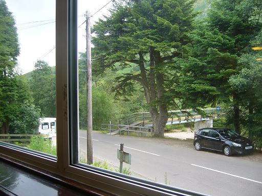

Munro Diary
Tracked online at www.munromap.co.uk
18th Feb 95
Broad Cairn (1)
My first Munro was Broad Cairn. I think I've climbed it 4 times so far (writing in 2004) with various people. This recorded time was with Mark Reed from Aberdeen University. Nice safe hill to climb in the winter. Long walk from the car park along Loch Muick and then a steep climb up to the plateau. Not the most dramatic Munro.... but 'you never forget your first time' ;O)
9th June 95
Lochnagar/Cac Carn Beag (little noisy loch) (2)
With David Lawson (of Catriona MacKenzie fame). Long, steep ascent up to Meikle Pap for the perfect view of Lochnagar's massive corrie with impressive cliffs. Lots of scree scrambling and boulder stepping on this walk. Great fun, fantastic views.
15th August 95
Meall Greigh (Hill of Horse Studs), Meall Garbh (Rough Hill), Ben Lawers (Loud Stream), Beinn Ghlas (Greenish Grey Hill), Meall Corranaich (Notched/prickly Hill) & Meall a' Choire Leaith (3,4,5,6,7,8,50)
I was at my peak of fitness at this point so I got dropped off early morning at Fearnan (at the foot of Meall Greigh) with a full (yes, I said full!!!) backpack, including tent. Then spent about 10 hours climbing round the 6 peaks. Fantastic view from Beinn Ghlas right down into Loch Tay. Then I hot footed it directly down the hill and back up (almost vertical) to Meall Corranaich and then over to Meall a' Choire Leaith. I did intend to do more but I stupidly camped that night beside the lochan and became midgy kill, so I just walked down into Killin and fed the ducks :OD
An Stuc added in 2017 when I realised I must have done it !!! I'm calling that my number 50 !!!!
7th September 95
Beinn Narnain & Beinn Ime (Butter Hill) (9,10)
Solo and an old geezer called Scott. At the top of Beinn Ime there's a kind of lookout post and the surrounding views are magnificent.. on a sunny day. I, however could only see about 20 feet in front of my face. Scotch mist indeed!
21st June 95
Tolmount (Doll hill), Tom Buidhe (Yellow hill), Cairn Bannoch (Point Hill) & Carn an t-Sagairt Mor (big hill of the priest) (11,12,13,14)
With Colin McAllister. Parked at Glen Doll and headed up to claim these four peaks near Broad Cairn. Gorgeous sunny day.
8th August 95
Creag Mhor (Big Rock), Carn Mairg (Hill of Sorrow), Meall Garbh (Rough Hill) and Carn Gorm (Blue Hill) (15,16,17,18)
Walked some of it with Bernhard Murphy who had retired, bought a campervan and now goes away for a few days at a time with his wife. She shops in the nearest town/village for the day.. he buggers off up the hills. A glimpse of my future?
10th April 95
Schiehallion (Fairy Hill of the Caledonians) (19)
With Sarah Potter. Well.. technically it was with my parents too but we left them at the bottom of the hill.
18th July 95
A' Bhuidheanach Bheag (Little Yellow Place) and Carn na Caim (Curved Cairn) (20,21)
With Jill McGlade. Wet, misty day.
14th June 95
Beinn Udlamain (Gloomy Mountain), Geal Charn (White Hill) and A' Mharconaich (Horse Place) (22,23,24)
With Colin McAllister
16-11-96
Mount Keen (25)
The most easterly Munro and an isolated mountain. Climbed with Mark Reed on a very snowy day. We nearly had to give up as the weather came in fast and caught us in a blizzard. Mark prayed for calm and got it. So we headed up to the peak and sledged back down on our jackets.
2nd July 96
Ben Lomond (Beacon Hill) (26)
With Dorothea Schlimm and Emmanuel Fridrich. 2 girls I met when I was studying in Switzerland. Nice sunny day. Went for a swim in Loch Lomond afterwards.
9th July 96
Dreish & Mayar (27,28)
Solo, and walked a bit with Doug. Great afternoon's walk up from Glendoll.
16th July 96
Sgairneach Mhor (Big Scree) (29)
One of the Drumochter pass walks I did solo
2nd July 97
Ben Macdui (Hill of Duff) & Carn a' Mhaim (Hill of the Pass) (30,31)
Long walk with Paula and Torbjorn (from Norway). All we needed was a Swede and and a Dane!
29th August 98
Carn Dearg (Red Hill) & A' Chailleach (The Old Woman) (32,33)
With Paula, Mark Reed and Joyce Reed. 2 peaks climbed from Newtonmore.
28th April 04
Ben Vorlich (Hill of the Bay) & Stuc a' Chroin (Peak of Harm/Damage) (34,35)
The first Munro I'd climbed for years and my legs told me about it for the next 2 days :O) This was during the 1 month I had in Dundee before moving permenantly to Finland. Relatively easy climb (when you're fit) and views back over Loch Earn. Met various folk out for family walks with their dogs.
Looking back down the track to Loch Earn
Ben Vorlich (from Stuc a' Chroin)
Stuc a' Chroin (from Ben Vorlich)
15th May 04 (36,37,38)
Carn nan Gabhar (Hill of the Goats), Braigh Coire Chruinn-bhalgain (Up from the round blister corriy) and Carn Laith (Grey Hill)
Camped overnight in Blair Atholl campsite and joined the mob in the car park at Loch Moraig to start my walk. About 100 people in total walking this route today in the bright sunshine. Couple of guys from London up for a break, various family groups. After a nice walk to the foot of Carn Laith it's a tiring/invigorating climb up a close zig-zag path to the peak, then a perfect view as the track follows a high ridge down and then up onto Braigh Coire Chruinn-bhalgain. Quick spurt accross to the 3rd paek and then (stupidly) I decided to go off track and skirt the south side ot the mountain back. Stunning veiws throughout the walk. NB. Next time just follow the rest :O) This is a walk I'd love to do again.
Start of the day.. very steep staircase ascent of Carn nan Gabhar in the distance.
Quite busy at the top.
Long ridge between the first two peaks.
The Holy Grail.
6th May 04
An Socach (Protecting Place), The Cairnwell (Peak of Bags), Carn Aosda (Hill of Age) & Carn a' Gheoidh (Goose Hill) (39,40,41,42)
If you want to see old ski equipment and ramshackle old huts... this is the route for you! God... the ammount of crap left lying about the hills here is unbelievable. I'm not against it at all.. makes an interesting walk. And don't even get me started on the rusty state of the chairlifts off of th Carinwell.
30 mins from the Glenshee carpark to the top of Aosda and then back across to the Cairnwell. I then pushed right accross to An Socach and then back by Gheoidh. Nice warm day and magnificent views.. especially from the tower at the top of the Cairnwell.
Path to Aosda (right) from car park. Pic taken from Glas Maol ascent.
14th May 04
Glas Maol (Greenish bare hill) & Creag Leacach (Slabby Rock) (43,44)
Solo. Last outing before heading off to get married in Suomi. These 2 peaks are on the other side of the road from the Cairnwell (see 6th May). No real effort, just a nice quick up first, along to the 2nd and back down via a nice stream onto the road and back to the car. Met a few baggers up there and saw a stoat.
This couple watch the start of the path
Not exactly sunny!.
29 Dec 06
Ben Chonzie attempt
Mum, Dad, Paula and myself set off from the dam carpark and walked along the loch. Mum and Dad walked to the end of the loch while Paula and I struck up to the summit. Mist closed in when we were maybe 30 mins from the summit so we turned and headed back down. Will attempt again in the summer.
Mum and Dad looking the part
Paula
23 Jun 07
Mamores: Sgurr Eilde Mor, Binnein Beag, Stob Coire a' Chairn (45,46,47) The day the mountains broke me!
I was fit! I was ready! I had planned 4 days on the hills above Kinlochleven when I was over in Scotland for a Microsoft course. FIRST (and only) day went like this:
Left at 8am. I was planning to do 6 tops today. Pouring rain and my boots were wet before I'd started climbing (no gators :O(). It was very misty so visibility wasn't great, but I was hoping that the sun would get rid of it by mid-day.. oh how wrong I was!
Got to top of Sgurr Eilde Mor in perfect time. Still misty very wet.
Hopped accross to Binnein Beag. Still feeling good. Still misty, still wet.
THEN THE MIST CAME DOWN-visibility about 10 feet!
I was lost within about 15 mins and ended up using my compass to try to find the 3 top (Binnein Mor). I just ended up on the ridge not knowing where I was.
2 hours later, and some very ropey map reading I finally confirmed where I was when the mist rose for about 1 minute... I was in the wrong valley. I had missed 2 tops. I was knackered by now but I had to climb the side of the hill between Na Gruagaichean and Stob Coire a' Chairn
Eventually I got to the ridge between the 2 and and I confirmed with 2 other walkers where I was. I could see Kinlochleven in the distance so I bravely struggled up Stob Coire a' Chairn before I knew I had to call it a day.
It took 2 hours just to walk out because my legs were dead and then, 1 hour from home, I toe-punted a rockstep up to a bridge and gave myself a back and blue toenail (I write this 1 month later and it's still black)
I will be back to the Mamores one day!!!!
Misty
Kinlochleven
26 Jul 2010
Ben Nevis!!!! (48)
Paula and I were visiting the West Coast and islands (Uist/Barra) by hire car. We stayed at Glen Nevis hostel, right across from the Munro path.
Although it was a long, 3 hour, slog up to the top it seemed quick because there were lots of folk on the path and there was no walk-in.
At the (wet and windy) top Stephen and Elizabeth asked us to witness their humanist wedding. Nice surprise when we were soaked, cold and hadn't had lunch yet :P
My legs were tired and Paula's knee was playing up but it was worth it to bag the biggest!

15 Jul 2017
Ben Chonzie (49)
With Barrie Wilson and Paula. We started with Elaine, John and Eilidh but they turned back halfway along the loch. Lovely sunny day and nice to be up a new Munro after quite a long break.